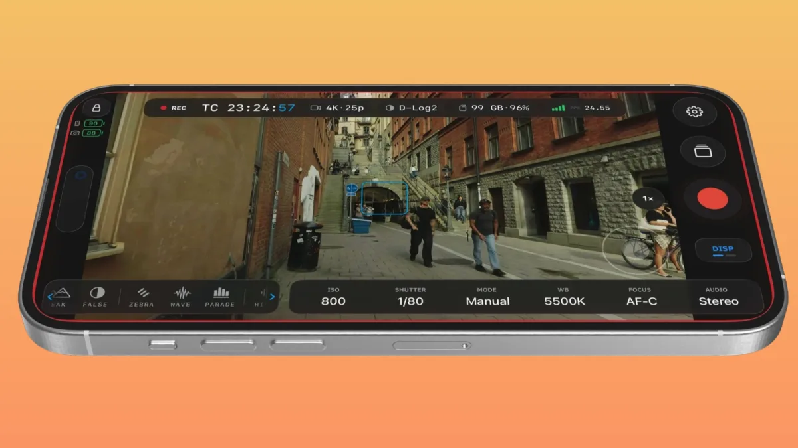
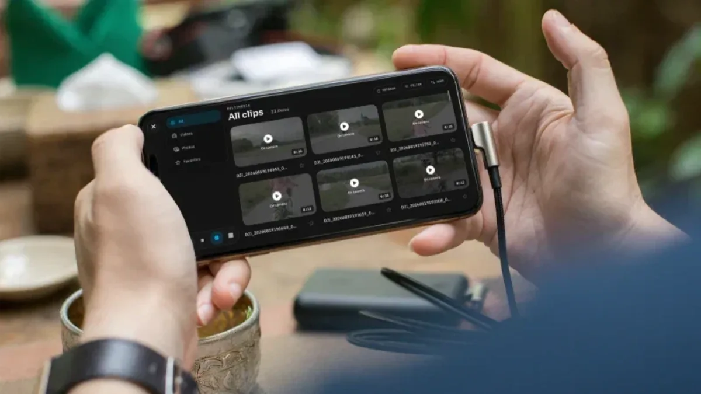
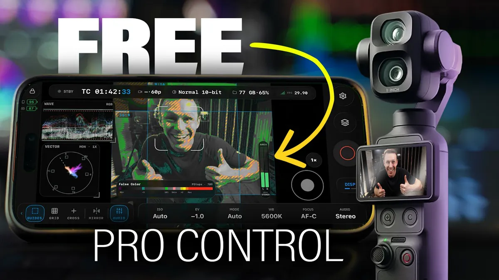
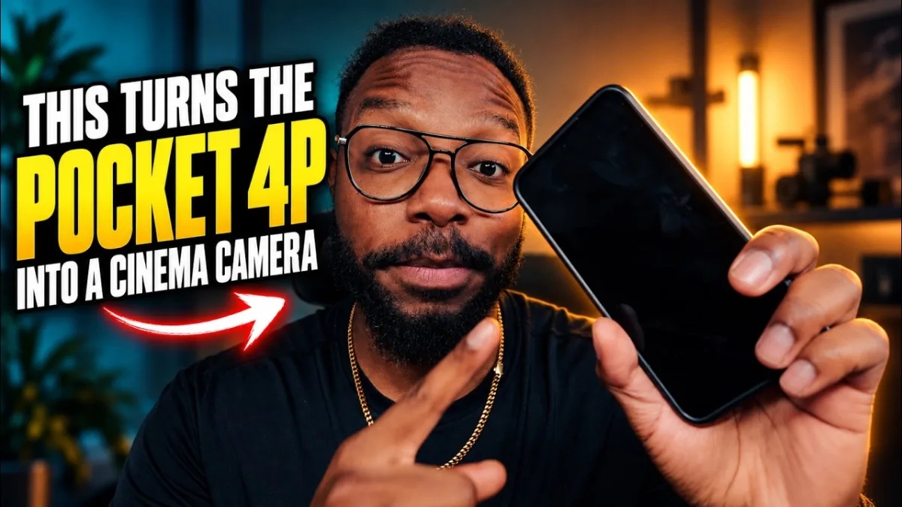
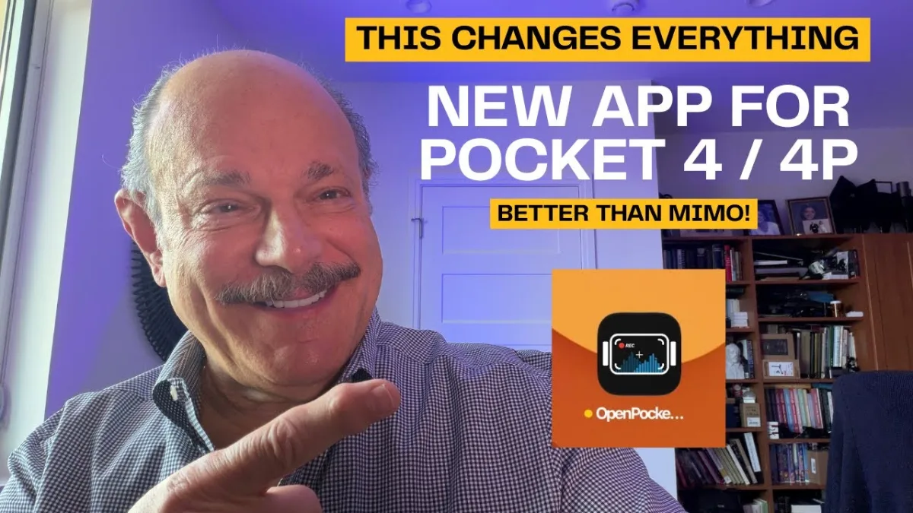

Osmo Pocket 4P
Dual-lens pocket gimbal. Live view, control, and monitor.
WorkingA bigger view. Precise control. The monitoring tools your Osmo deserves, on your phone or iPad.
Open betas for iPhone, iPad & Android. Check your camera

Waveform, vectorscope, histogram, RGB parade, false color, zebras, focus peaking, Traffic Lights, frame guides, and your own .cube LUTs. Drawn from the HEVC stream.

Adjust ISO, shutter, white balance, focus, and recording format from the monitor. Frame with the gimbal and zoom controls, then start or stop recording from your phone. Available controls follow the connected camera.

Faces are boxed on the live feed. Tap one to lock the Osmo subject tracker.
Zebras, peaking, false color, waveform, Traffic Lights, guides, and grid stay available when the phone is vertical.

LEVEL reads the camera’s attitude to show roll and tilt on the picture. Pair it with the camera EV meter and waveform to check framing and exposure without looking away from the shot.
Live camera telemetry, with clear indicators when readings are unavailable.


Browse clips and stills on the camera. Star the keepers and delete the rest while you still remember the shot.
Bring your Osmo feed to a bigger screen. Place and resize waveform, histogram, and vectorscope around the picture, with camera controls and your LUT close at hand.

Playback keeps the same scopes and assists as live view. Export with an optional baked LUT, conform slow motion, share natively, or upload to Frame.io.


No subscriptions or paywalls. Reliability reporting is optional and off by default. OpenPocketCine is Apache-2.0 licensed and built in the open by a community of filmmakers and developers.
Pocket 4P and Pocket 4 are working. Pocket 3 and Nano are partial. Action 5 and 6 are untested.
Dual-lens pocket gimbal. Live view, control, and monitor.
Working
Same family as 4P. Live view, control, and monitor.
Working
Previous-gen Pocket. Live view works; some features still catching up.
Partial
Action series. Not yet run through OpenPocketCine.
Untested
Wearable Nano. Live view works; some features still catching up.
PartialReviews and coverage from filmmakers, creators, and the press.

Johnnie Behiri on scopes, remote control, and a camera line that never had them.
cined.com
Waveform scopes, camera control, playback, and Frame.io upload. No subscriptions, no paywalls.
gadgetpilipinas.net
A hands-on video review of monitoring, scopes, and control on the Pocket 4 Pro.
youtube.com
A look at OpenPocketCine’s cinema features for the Pocket 4 Pro.
youtube.com
Field monitoring and remote control for the Pocket 4 and Pocket 4 Pro.
youtube.comChoose your platform and join the open beta.
Free to use. Built in the open.
New here? Read the setup guide